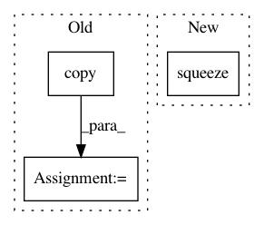

31aa6d413fecf5b2b37a742ab16dcc08277f3d84,linearmodels/panel/results.py,PanelResults,wresid,#PanelResults#,240
Before Change
@property
def wresid(self):
Weighted model residuals
out = self.model.dependent.dataframe.copy()
out.iloc[:, :] = self.wresid
return out
After Change
@property
def wresid(self):
Weighted model residuals
return Series(self._wresid.squeeze(), index=self._index, name="wresid")
In pattern: SUPERPATTERN
Frequency: 3
Non-data size: 3
Instances
Project Name: bashtage/linearmodels
Commit Name: 31aa6d413fecf5b2b37a742ab16dcc08277f3d84
Time: 2017-04-03
Author: kevin.k.sheppard@gmail.com
File Name: linearmodels/panel/results.py
Class Name: PanelResults
Method Name: wresid
Project Name: ilastik/ilastik
Commit Name: fb48eb38f8b489a23949094a1933864b6c5ed74f
Time: 2011-06-27
Author: christoph.straehle@iwr.uni-heidelberg.de
File Name: lazyflow/operators/vigraOperators.py
Class Name: OpBaseVigraFilter
Method Name: getOutSlot
Project Name: bashtage/linearmodels
Commit Name: 31aa6d413fecf5b2b37a742ab16dcc08277f3d84
Time: 2017-04-03
Author: kevin.k.sheppard@gmail.com
File Name: linearmodels/panel/results.py
Class Name: PanelResults
Method Name: resid